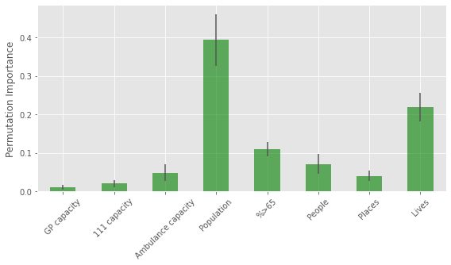
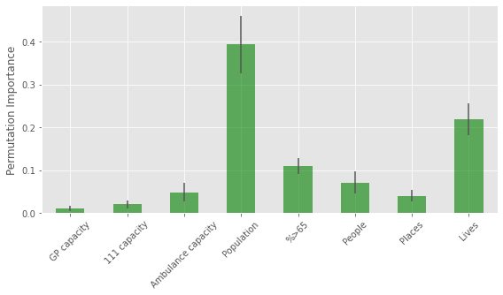
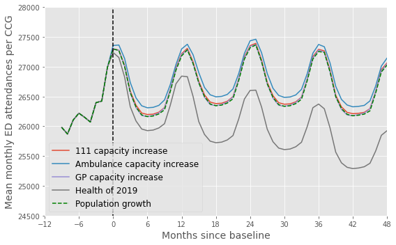

Forecasting Future ED Demand
Contents
Forecasting Future ED Demand#
Overview#
This notebook contains the code to forecast future ED demand under 4 different scenarios:
‘do nothing’: population grows but population health and health service capacity reamin unchanged
Increase 111 capacity by 10% in 2020
Increase 999 capacity by 10% in 2020
Increase GP capacity by 10% in 2020
If population health measures (People, Places, Lives) are less than the 2019 average, increase them by 0.2 points per year until they reach the 2019 average.
#turn warnings off to keep notebook tidy
import warnings
warnings.filterwarnings('ignore')
Import libraries#
import os
import pandas as pd
import numpy as np
import pickle as pkl
from sklearn.linear_model import LinearRegression
from sklearn.ensemble import RandomForestRegressor
from sklearn.ensemble import GradientBoostingRegressor
import seaborn as sns
import matplotlib.pyplot as plt
%matplotlib inline
plt.style.use('ggplot')
Import trained models#
with open('stacked_model_scaled.pkl','rb') as f:
models, m1_features, m2_features = pkl.load(f)
NB if running notebook on colab the above code wont work. Instead, run the following cell:
%run stacked_model.ipynb
models = [rf1,rf2,final]
0.4519048888936743
0.4227235191823048
0.5791158305719311
0.6661669967506625
(1618, 14)
 

Combined training score: 0.8171513959512132
Import population forecasts#
population = pd.read_csv('https://raw.githubusercontent.com/CharlotteJames/ed-forecast/main/data/pop_forecasts_scaled_new.csv',
index_col=0)
population
| 2018 | 2019 | 2020 | 2021 | 2022 | 2023 | 2024 | 2025 | 2026 | 2027 | ... | 2035 | 2036 | 2037 | 2038 | 2039 | 2040 | 2041 | 2042 | 2043 | ccg | |
|---|---|---|---|---|---|---|---|---|---|---|---|---|---|---|---|---|---|---|---|---|---|
| 0 | 200.8447 | 202.9265 | 204.7996 | 206.5125 | 208.0446 | 209.3943 | 210.5565 | 211.5642 | 212.5387 | 213.4931 | ... | 221.2491 | 222.2393 | 223.2383 | 224.2422 | 225.2318 | 226.1957 | 227.1281 | 228.0246 | 228.8859 | A3A8R |
| 1 | 209.5479 | 210.8074 | 211.8850 | 212.8265 | 213.6216 | 214.2545 | 214.7215 | 215.0593 | 215.4030 | 215.7479 | ... | 219.0375 | 219.4856 | 219.9439 | 220.4162 | 220.8884 | 221.3468 | 221.7894 | 222.2189 | 222.6387 | W2U3Z |
| 2 | 149.4905 | 150.2535 | 150.9484 | 151.6046 | 152.1883 | 152.6870 | 153.1002 | 153.4384 | 153.7346 | 154.0150 | ... | 156.6288 | 157.0287 | 157.4507 | 157.8919 | 158.3365 | 158.7785 | 159.2128 | 159.6398 | 160.0604 | 36L |
| 3 | 181.1249 | 182.6084 | 183.9507 | 185.1905 | 186.3272 | 187.3571 | 188.2697 | 189.0749 | 189.8431 | 190.5932 | ... | 197.0201 | 197.8779 | 198.7388 | 199.6013 | 200.4489 | 201.2717 | 202.0611 | 202.8162 | 203.5407 | 72Q |
| 4 | 149.8001 | 151.1457 | 152.3376 | 153.3887 | 154.3113 | 155.1054 | 155.7686 | 156.3214 | 156.8646 | 157.4020 | ... | 161.9110 | 162.4828 | 163.0498 | 163.6149 | 164.1693 | 164.7041 | 165.2164 | 165.7083 | 166.1828 | 93C |
| ... | ... | ... | ... | ... | ... | ... | ... | ... | ... | ... | ... | ... | ... | ... | ... | ... | ... | ... | ... | ... | ... |
| 76 | 21.5133 | 21.6203 | 21.6898 | 21.7321 | 21.7657 | 21.8065 | 21.8544 | 21.9101 | 21.9739 | 22.0439 | ... | 22.4638 | 22.5006 | 22.5295 | 22.5486 | 22.5715 | 22.5996 | 22.6308 | 22.6632 | 22.6963 | 10R |
| 77 | 48.9709 | 49.2387 | 49.4684 | 49.6714 | 49.8482 | 50.0060 | 50.1449 | 50.2665 | 50.3747 | 50.4696 | ... | 50.9995 | 51.0625 | 51.1297 | 51.1994 | 51.2754 | 51.3581 | 51.4457 | 51.5383 | 51.6351 | 15A |
| 78 | 56.8210 | 57.4154 | 57.9778 | 58.5240 | 59.0612 | 59.5859 | 60.1019 | 60.6047 | 61.0936 | 61.5704 | ... | 64.7377 | 65.0715 | 65.3987 | 65.7217 | 66.0425 | 66.3625 | 66.6815 | 66.9986 | 67.3133 | 11N |
| 79 | 55.9399 | 56.3600 | 56.7726 | 57.1821 | 57.5799 | 57.9658 | 58.3368 | 58.6904 | 59.0312 | 59.3577 | ... | 61.6103 | 61.8668 | 62.1228 | 62.3799 | 62.6334 | 62.8819 | 63.1262 | 63.3669 | 63.6048 | 11X |
| 80 | 85.8852 | 86.5409 | 87.1659 | 87.7879 | 88.3855 | 88.9617 | 89.5148 | 90.0372 | 90.5408 | 91.0223 | ... | 94.3408 | 94.7170 | 95.0941 | 95.4763 | 95.8582 | 96.2381 | 96.6183 | 96.9977 | 97.3744 | 70F |
81 rows × 27 columns
Import 2019 data as baseline#
baseline = pd.read_csv('https://raw.githubusercontent.com/CharlotteJames/ed-forecast/main/data/master_scaled_2019_new.csv',
index_col=0)
baseline.columns = ['_'.join([c.split('/')[0],c.split('/')[-1]])
if '/' in c else c for c in baseline.columns]
baseline
| ccg | month | 111_111_offered | 111_111_answered | amb_sys_made | amb_sys_answered | gp_appt_available | ae_attendances_attendances | population | People | Places | Lives | |
|---|---|---|---|---|---|---|---|---|---|---|---|---|
| 0 | 00Q | Jan | 347.450401 | 275.144606 | 276.797526 | 223.661852 | 4665.289367 | 1044.377666 | 14.9084 | 96.0 | 99.5 | 94.6 |
| 1 | 00Q | Feb | 311.886541 | 253.462976 | 247.201714 | 198.606966 | 4060.932092 | 972.136514 | 14.9084 | 96.0 | 99.5 | 94.6 |
| 2 | 00Q | Mar | 317.916884 | 277.724317 | 259.446256 | 208.037004 | 4191.127150 | 1056.317244 | 14.9084 | 96.0 | 99.5 | 94.6 |
| 3 | 00Q | Apr | 326.639691 | 286.837872 | 261.284595 | 207.529233 | 3765.259854 | 1068.458050 | 14.9084 | 96.0 | 99.5 | 94.6 |
| 4 | 00Q | May | 331.225629 | 287.382197 | 263.684592 | 207.844258 | 3888.881436 | 1085.294197 | 14.9084 | 96.0 | 99.5 | 94.6 |
| ... | ... | ... | ... | ... | ... | ... | ... | ... | ... | ... | ... | ... |
| 907 | X2C4Y | Aug | 281.008273 | 253.093792 | 459.652700 | 306.843650 | 3982.517935 | 390.405530 | 44.0337 | 93.3 | 98.3 | 97.6 |
| 908 | X2C4Y | Sep | 263.936917 | 240.868701 | 453.078703 | 305.262399 | 4598.750502 | 388.679580 | 44.0337 | 93.3 | 98.3 | 97.6 |
| 909 | X2C4Y | Oct | 286.454848 | 254.680032 | 488.348051 | 327.202669 | 5225.611293 | 391.268506 | 44.0337 | 93.3 | 98.3 | 97.6 |
| 910 | X2C4Y | Nov | 326.984206 | 276.374619 | 499.497654 | 306.953594 | 4606.948769 | 389.542555 | 44.0337 | 93.3 | 98.3 | 97.6 |
| 911 | X2C4Y | Dec | 365.414559 | 334.346359 | 532.917357 | 311.645611 | 4160.472547 | 404.531075 | 44.0337 | 93.3 | 98.3 | 97.6 |
812 rows × 12 columns
Functions#
Model predicts monthly ED attendances per 10,000 people
To forecast raw numbers, need to multiply predicted value by population/10,000
def stacked_predict(X, models, m1_features, m2_features):
rf1,rf2,final = models
y_pred_1 = rf1.predict(X[m1_features])
y_pred_2 = rf2.predict(X[m2_features])
X_f = np.vstack([y_pred_1, y_pred_2]).T
preds = final.predict(X_f)
return preds
def forecast(data, pop, year, models, m1_features, m2_features):
# model = reg
data = data.merge(pop[[str(year),'ccg']],
left_on = 'ccg', right_on='ccg')
data['population'] = data[str(year)]#*10000
X = data.drop(['ae_attendances_attendances','ccg',\
'month',str(year),'ccg'], axis=1)
preds = stacked_predict(X, models, m1_features, m2_features)
preds = preds*data['population'].values
return preds
def sum_by_month(results):
to_plot = []
months = ['Jan','Feb','Mar','Apr','May','Jun',\
'Jul','Aug','Sep','Oct','Nov','Dec']
for month in months:
res = results.loc[results.month==month]
to_plot.append(np.mean(res[res.columns[2:]].values, axis=0))
to_plot = np.array(to_plot).T
points = []
for row in to_plot:
points.extend(row)
return points
List to store scenario results#
scenario_results = []
Scaling factor for capacity increase#
F=1.1
Scenario 1: do nothing#
results = pd.DataFrame()
results['ccg'] = baseline['ccg']
results['month'] = baseline['month']
results['2019'] = baseline['ae_attendances_attendances']*baseline['population']
for year in np.arange(2020,2028):
preds = forecast(baseline,population,year,models,m1_features,m2_features)
results[str(year)] = preds
points = sum_by_month(results)
fig,ax = plt.subplots(figsize=(6,4))
plt.plot(points[2:])
plt.show()

scenario_results.append(results)
Scenario 2: increase 111 capacity#
results = pd.DataFrame()
results['ccg'] = baseline['ccg']
results['month'] = baseline['month']
results['2019'] = baseline['ae_attendances_attendances']*baseline['population']
dta = baseline.copy()
for year in np.arange(2020,2028):
dta['111_111_offered'] = baseline['111_111_offered'].values*F
preds = forecast(dta,population,year,models,m1_features,m2_features)
results[str(year)] = preds
points = sum_by_month(results)
fig,ax = plt.subplots(figsize=(6,4))
plt.plot(points[2:])
plt.show()

scenario_results.append(results)
Scenario 3: increase 999 capacity#
results = pd.DataFrame()
results['ccg'] = baseline['ccg']
results['month'] = baseline['month']
results['2019'] = baseline['ae_attendances_attendances']*baseline['population']
dta = baseline.copy()
for year in np.arange(2020,2028):
dta['amb_sys_answered'] = baseline['amb_sys_answered'].values*F
preds = forecast(dta,population,year,models,m1_features,m2_features)
results[str(year)] = preds
points = sum_by_month(results)
fig,ax = plt.subplots(figsize=(6,4))
plt.plot(points[2:])
plt.show()

scenario_results.append(results)
Scenario 4: increase GP capacity#
results = pd.DataFrame()
results['ccg'] = baseline['ccg']
results['month'] = baseline['month']
results['2019'] = baseline['ae_attendances_attendances']*baseline['population']
dta = baseline.copy()
for year in np.arange(2020,2028):
dta['gp_appt_available'] = baseline['gp_appt_available'].values*F
preds = forecast(dta,population,year,models,m1_features,m2_features)
results[str(year)] = preds
points = sum_by_month(results)
fig,ax = plt.subplots(figsize=(6,4))
plt.plot(points[2:])
plt.show()

scenario_results.append(results)
Scenario 5: health of population at 2019#
results = pd.DataFrame()
results['ccg'] = baseline['ccg']
results['month'] = baseline['month']
results['2019'] = baseline['ae_attendances_attendances']*baseline['population']
dta = baseline.copy()
for year in np.arange(2020,2028):
dta['People'] = [p+0.2 if p<np.mean(baseline.People.values) else p for p in dta.People.values]
dta['Places'] = [p+0.2 if p<np.mean(baseline.Places.values) else p for p in dta.Places.values]
dta['Lives'] = [p+0.2 if p<np.mean(baseline.Lives.values) else p for p in dta.Lives.values]
preds = forecast(dta,population,year,models,m1_features,m2_features)
results[str(year)] = preds
points = sum_by_month(results)
fig,ax = plt.subplots(figsize=(6,4))
plt.plot(points[2:])
plt.show()

scenario_results.append(results)
Plot#
fig,ax = plt.subplots(figsize=(8,5))
scenarios = ['Population growth','111 capacity increase',
'Ambulance capacity increase','GP capacity increase', 'Health of 2019']
for i,results in enumerate(scenario_results):
if i==0:
continue
points = sum_by_month(results)
points_series = pd.Series(points)
plt.plot(np.arange(-12, 96),
points_series.rolling(window=4).mean().to_list()[:],
label = f'{scenarios[i]}')
points = sum_by_month(scenario_results[0])
points_series = pd.Series(points)
plt.plot(np.arange(-12, 96),
points_series.rolling(window=4).mean().to_list()[:],
'g--', label = f'{scenarios[0]}')
y = np.arange(24000,29000,1000)
plt.plot(np.zeros(len(y)),y, 'k--')
plt.legend(loc = 'lower left', fontsize=12)
plt.ylabel('Mean monthly ED attendances per CCG', fontsize=14)
plt.xlabel('Months since baseline', fontsize=14)
plt.xlim(0,48)
start, end = ax.get_xlim()
ax.xaxis.set_ticks(np.arange(-12, 50, 10))
#plt.ylim(24000,27000)
plt.tight_layout()
plt.savefig('forecast_scaled.png')
plt.show()